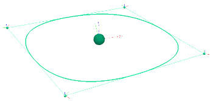
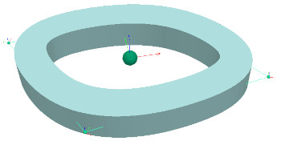
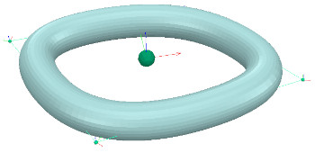

|
PathsA path is a pseudo scene object, representing a succession of points with orientation in space: it is rather a model built using dummies and a customization script that describes its functionality and behaviour.  [Simple path containing 4 control points] Path objects can be added to the scene with [Add > Path]. Refer also to sim.scene:createObject. A path is composed by control points that define its curve in space. Control points can be shifted, copy/pasted or deleted. A path properties are set in its customization script. See also the Path class, Path:new and Path:createShape:  [Simple path generating an extruded square shape]  [Simple path generating an extruded circular shape] Path data is stored inside of the path object, as a custom data property of type buffer. It can be accessed with: #python
# control point data (poses, one column per pose):
ctrlPts = sim.app:unpack(path.customData.pathInfo).ctrlPoints.points
# path data (poses, one column per pose):
pts = sim.app:unpack(path.customData.pathInfo).pathPoints.points
--lua
# control point data (poses, one column per pose):
local ctrlPts = sim.app:unpack(path.customData.pathInfo).ctrlPoints.points
# path data (poses, one column per pose):
local pts = sim.app:unpack(path.customData.pathInfo).pathPoints.points
In order to have an object follow a path in position and orientation, one could use following script: --lua
function sysCall_init()
sim = require('sim-2')
simEigen = require('simEigen')
Path = require('Path')
objectToFollowPath = sim.self:getObject('..')
pathObj = sim.self:getObject('/Path')
velocity = 0.04 -- m/s
posAlongPath = 0
previousSimulationTime = 0
sim.self:setStepping(true)
local pathInfo = sim.app:unpack(pathObj.customData.pathInfo)
local pathPts = pathInfo.pathPoints.points
local opt = {}
opt.onlyCtrlPoints = true
opt.types = {'lin', 'lin', 'lin', 'quat', 'quat', 'quat', 'quat'}
opt.metric = {1.0, 1.0, 1.0, 0.0, 0.0, 0.0, 0.0}
opt.closed = pathInfo.opt.closed
opt.ctrlPoints = {}
opt.ctrlPoints.duplicateThreshold = 0.0
opt.ctrlPoints.linearityTolerance = 0.0
path = Path(pathPts, opt)
totalLength = path:data().ctrlPoints.pathLength
-- visualize the actual path being used:
-- path:createMarkers()
end
function sysCall_thread()
while true do
local t = sim.scene.simulation.time
posAlongPath = posAlongPath + velocity * (t - previousSimulationTime)
local pointData = path:getPoint((posAlongPath / totalLength) % 1.0)
local pose = simEigen.Pose(pointData:data())
objectToFollowPath:setPose(pose, {relativeToObject = pathObj})
previousSimulationTime = t
sim.self:step()
end
end
|